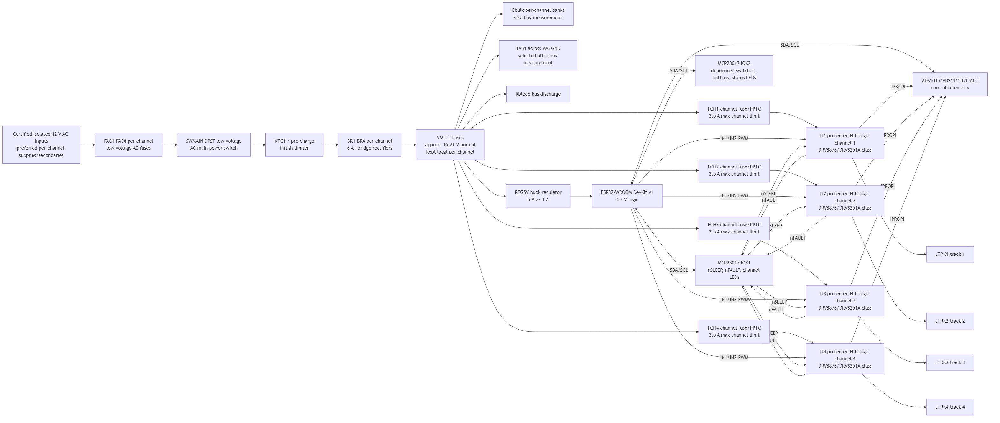

Control
Four independent PWM channels with forward, reverse, neutral, ramp profiles, emergency stop, and physical/PWA command arbitration.
Repository
ESP32 local PWA · OO-gauge DC/PWM control · four-channel hardware architecture · KiCad planning
RailwayController is a bi-directional, short-circuit-aware controller concept for a two-rail OO-gauge model railway. The product idea is deliberately practical: an ESP32 hosts a fast local PWA, physical controls remain usable at the panel, and the hardware design teaches real electronics rather than hiding everything behind a sealed controller box.
The repository is currently research and architecture work rather than a build-ready product. That matters because the project touches power electronics, old and modern model railway motors, fusing, current limits, inrush, heat, derailment shorts, and safe educational construction. The portfolio case therefore presents the actual design evidence and the remaining validation work plainly.

Generated circuit diagram from the repository: low-voltage power path, ESP32 control, I2C expansion, panel controls, and repeated track channel architecture.
The project grew from the limits of children’s model railway controller options: cost, adaptability, build quality, remote control, and the desire for something that can be understood and modified. A local ESP32-hosted controller keeps the railway as a toy and learning platform while adding phone, tablet, desktop, and physical control paths.
The need is not simply remote speed control. It is a safe, inspectable product design for older Tri-ang and Hornby Tri-ang locomotives, Mainline engines, and modern Hornby motors, with per-channel profiles, visible power/fault states, current telemetry, and fail-safe behaviour when anything goes wrong.
Four independent PWM channels with forward, reverse, neutral, ramp profiles, emergency stop, and physical/PWA command arbitration.
Low-voltage transformer boundary, fusing, protected H-bridges, TVS protection, current sensing, thermal validation, and visible fault states.
Beginner-readable documentation that still explains real ESP32, PWA, ADC, debounce, motor-driver, and railway-electrical decisions.
As of 29 July 2026, Phase 0 is complete and Phase 1 is in progress. The repository includes GPL-3.0 licensing, a source-backed architecture, circuit documentation, a draft component list, a KiCad schematic scaffold, a generated top-level diagram, and explicit notes that the design is not yet validated as build-ready.
Remaining Phase 1 work includes final driver configuration, current-limit and current-sense calculations, exact TVS/fuse/inrush/switch/transformer part selection after measurements, a formal risk register, and a schematic-ready design. Firmware, PWA implementation, bench electronics, railway testing, and release documentation have not started.